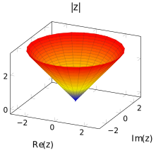
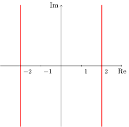

Présentation
Arithmétique élémentaire
Avant d’introduire les nombres complexes, il serait pertinent de revoir quelques propriétés de ce que nous avons coutume d’appeler nombre, et de faire l’inventaire des objets mathématiques qui appartiennent à cette catégorie.
Les nombres en général
Les nombres — qu’on les qualifie de naturels, entiers, rationnels, réels ou complexes — sont des objets mathématiques qui une fois déshabillés des attributs que nous leur prêtons, se réduisent à n’être que des ensembles. Au moyen d’efforts considérables dans certains cas, tout nombre \(x\) peut s’écrire de manière à ce que \(x=\{\ldots\}\), où les trois points sont eux-mêmes des ensembles, des ensembles d’ensembles, etc. Si ces définitions — qu’on pourrait qualifier d’ensemblistes — des nombres sont d’une importance capitale, tous conviendront que nos raisonnements quotidiens qui les font intervenir portent davantage sur leurs caractéristiques que sur leur définition. Ainsi, en pensant au nombre \(2\), l’image de deux points, semblables à ceux qu’on retrouve sur un dé à 6 faces, se présentera à notre esprit plus rapidement que la définition du nombre \(2\) donnée par John von Neumann (voir Neumann (1923)) voulant que \(2=\{\emptyset,\{\emptyset\}\}\), où \(\emptyset\) désigne l’ensemble ne comportant aucun élément (l’ensemble vide).
Deux opérations fondamentales
Dès le début du primaire, on apprend à additionner et à multiplier des nombres. Ils sont d’abord naturels, puis lorsque l’élève termine ses études primaires, il est réputé en mesure d’effectuer ces opérations avec des nombres appartenant à des ensembles plus vastes, comme le sont les entiers et les nombres fractionnaires1. Dans tous les cas, certaines propriétés, qu’on pourrait qualifier de « lois de l’arithmétique », sont vérifiées. En voici quelques-unes :
1 Éventuellement appelés nombres rationnels.
- L’addition et la multiplication sont des opérations associatives ;
- L’addition et la multiplication sont des opérations commutatives ;
- La multiplication est distributive sur l’addition ;
- Un ensemble de nombres \(E\) est stable pour l’addition et la multiplication.
Voici ce qu’on entend par ces lois.
Associativité
Le fait qu’écrire \(1+2+5\) ne pose aucune ambiguïté découle du fait que l’opération d’addition soit associative. Qu’on calcule \((1+2)+5\) ou \(1+(2+5)\), le résultat sera le même. De la même manière, \[3\times 4\times 5=3\times (4\times 5)=(3\times 4)\times 5.\] L’associativité c’est la possibilité de déplacer une paire de parenthèses sans modifier le résultat. Bien que l’addition et la multiplication soient des opérations associatives, le déplacement de parenthèses n’est pas forcément valable si ces deux opérations sont présentes dans un même calcul. Par exemple, pour calculer \(1+2\times 5\), on ne peut pas calculer n’importe quelle des deux expressions \((1+2)\times 5\) et \(1+(2\times 5)\). On convient que l’expression \(1+2\times 5\) correspond à \(1+(2\times 5)\). Il s’agit ainsi d’une convention d’écriture plutôt que d’un résultat mathématique. On réfère souvent à cette convention en invoquant la priorité des opérations. Encore une fois, ce sont des expressions qui ne font que traduire l’économie de parenthèses qu’il nous est possible de réaliser ; plutôt que d’écrire \[1+((2\times 7)+(3\times 3-(8\times 2))),\] on convient d’écrire simplement \(1+2\times 7+3\times 3-8\times 2\). Notons que ce ne sont pas toutes les opérations qui sont associatives. Par exemple, \[(3\div 4)\div 5\neq 3\div(4\div 5).\] Le membre de gauche correspond à la fraction \(\frac{3}{20}\) alors que le membre de droite à \(\frac{15}{4}\). Il s’agit là de deux fractions qui ne sont pas équivalentes.
L’idée d’associativité s’étend au-delà des opérations sur les nombres. Par exemple, si \(f,g\) et \(h\) sont des fonctions, alors \((f\circ g)\circ h=f\circ (g\circ h)\). À titre d’exemple, posons \(f(x)=x^2, g(x)=\sin(x)\) et \(h(x)=x+1\). Nous avons que \((f\circ g)(x)=\sin^2(x)\), d’où \[\left((f\circ g)\circ h\right)(x)=\sin^2(h(x))=\sin^2(x+1).\] De même, \((g\circ h)(x)=\sin(x+1)\), d’où \[\left(f\circ (g\circ h)\right)(x)=f(\sin(x+1))=(\sin(x+1))^2=\sin^2(x+1).\] Encore une fois, l’égalité \((\sin (x+1))^2=\sin^2(x+1)\) est vraie puisqu’il s’agit d’une convention d’écriture.
Commutativité
Si l’associativité est la possibilité de déplacer des parenthèses, la commutativité est, pour sa part, la possibilité d’inverser l’ordre des deux arguments intervenant dans l’opération. Par exemple, l’équation \[1+3=3+1\] est vraie, puisque l’addition est une opération commutative. La multiplication de nombres est aussi une opération commutative2. Il en va autrement de la multiplication matricielle. Par exemple, si \[A=\begin{pmatrix} 0 &1 \\ 2 & 3\\ \end{pmatrix}\qquad\text{et}\qquad B=\begin{pmatrix} 1 &-1 \\ 0 & 2\\\end{pmatrix},\] alors \[AB=\begin{pmatrix} 0 &2 \\ 2 & 4\\ \end{pmatrix}\qquad\text{et}\qquad BA=\begin{pmatrix} -2 &-2 \\ 4 & 6\\\end{pmatrix}.\]
2 Il est possible de définir une opération de multiplication sur certains ensembles de nombres, de telle sorte que la multiplication ne soit pas commutative. C’est notamment le cas avec l’ensemble des quaternions. Comme ces nombres sont l’apanage des mathématiques avancées et de la physique théorique, nous ne nous étendrons pas plus loin sur le sujet.
Un énoncé du type « la multiplication est commutative » doit donc être mis en contexte ; il faut bien comprendre de quelle multiplication il s’agit. En principe, on doit toujours préciser l’ensemble sur lequel l’opération est définie. Il serait plus juste de dire que « la multiplication définie sur l’ensemble des nombres réels est une opération commutative » alors que « la multiplication définie sur l’ensemble des matrices \(2\times 2\) n’est pas une opération commutative ». L’algèbre moderne s’efforce de clarifier ces notions en introduisant ce qu’on appelle des structures algébriques.
Distributivité de la multiplication par rapport à l’addition
On l’a vu, dans une même expression, il est possible d’y voir deux opérations de nature différente. Un cas important est celui d’une expression où sont présentes l’addition et la multiplication. C’est ce qu’on constate dans l’expression \(5\times(1+3)\). Pour l’évaluer, on peut bien sûr évaluer la somme entre parenthèses, puis multiplier \(5\) par \(4\). Une autre avenue possible est de « distribuer » la multiplication par rapport à l’addition, ce qui signifie calculer \((5\times 1)+(5\times 3)\). Lorsqu’on affirme que la multiplication est distributive par rapport à l’addition, cela signifie que pour tous nombres \(a,b\) et \(c\), on a \[a\times (b+c)=a\times b+a\times c.\]
Stabilité d’un ensemble par rapport à une opération
Le symbole \(\mathbb{Z}\), utilisé pour représenter l’ensemble des entiers, est la première lettre du mot allemand zahl qui signifie « nombre ».
Étant donnés des nombres \(a\) et \(b\) appartenant à un ensemble de nombres \(E\), leur somme et leur produit appartiennent toujours à l’ensemble \(E\). Ce n’est pas toujours le cas pour le résultat d’une opération. À titre d’exemple, l’ensemble des nombres naturels n’est pas stable pour la soustraction. En effet, ce ne sont pas tous les problèmes de soustraction3 qui admettent une solution; c’est notamment le cas du problème \(5+\square=3\). L’ensemble des entiers règle le problème de la stabilité pour l’opération de la soustraction de nombres naturels, mais cela n’améliore guère les choses pour les problèmes de division.
3 Un problème de soustraction consiste à trouver une solution à une équation de type \(a+\square=b\).
Prenons deux nombres naturels \(a\) et \(b\), tels que \(b\) soit non nul, et considérons l’équation \(b\times \square= a\). Il arrive que cette équation possède une solution qui est dans \(\mathbb{N}\), mais ce n’est généralement pas le cas. Par exemple, \(3\times \square= 12\) possède une solution — le nombre \(4\) —, mais l’équation \(3\times \square= 13\) n’en possède pas.
L’ensemble des fractions, aussi appelé ensemble des nombres rationnels, est représenté par le symbole \(\mathbb{Q}\).
L’ensemble des nombres réels est représenté par le symbole \(\mathbb{R}\).
L’ajout des nombres fractionnaires permet non seulement de résoudre ce problème dans le cas où \(a\) et \(b\) sont des nombres naturels, mais aussi de le faire dans le cas où \(a\) et \(b\) sont des nombres fractionnaires. C’est cette propriété qu’on évoque lorsqu’on mentionne que les nombres fractionnaires sont stables pour l’opération de division.
Vers le 5ᵉ siècle avant notre ère, les mathématiciens grecs ont tenté de mesurer la longueur de l’hypoténuse d’un triangle rectangle dont les côtés adjacents à l’angle droit sont de longueur \(1\). En utilisant le théorème de Pythagore, ils ont ramené le problème à celui de trouver un nombre \(x\) tel que \(2=x^2\). Ils en sont venus à la conclusion que \(x\) ne pouvait être le quotient de deux nombres entiers. Bien sûr, le langage utilisé pour exprimer cette constatation était fort différent. On parlait plutôt d’une quantité incommensurable, ou encore inexprimable. Le tout rédigé en grec ancien! On ignore toujours si le problème du calcul de la mesure de l’hypoténuse d’un triangle rectangle est le premier qui a amené les Grecs à considérer des nombres irrationnels. Cette découverte suggère néanmoins de définir un ensemble de nombres plus vaste, comprenant le nombre \(\sqrt{2}\), mais aussi tous les « trous » sur la droite numérique entre les nombres rationnels. Pour plus d’information sur le nombre \(\sqrt{2}\) et l’extraction des racines carrées, voir Rittaud (2006). L’existence de tels nombres signifiait que les fractions ne remplissaient pas complètement la droite numérique, qu’on associe à l’ensemble des nombres réels.
Définition des nombres complexes
Définition 1 On appelle unité imaginaire un nombre qui, multiplié par lui-même, vaut \(-1\). On le notera \(\textrm{i}\).
En sciences physiques, plus particulièrement dans le domaine du génie électrique, le symbole \(\textrm{j}\) est utilisé pour représenter l’unité imaginaire. Cela est pour éviter toute confusion possible avec l’intensité d’un courant électrique, qui est souvent représentée par la lettre \(\textrm{i}\).
Plusieurs commentaires s’imposent après une telle définition. D’abord, elle se place en opposition avec un fait relayé depuis le secondaire : un nombre, multiplié par lui-même, ne peut donner une quantité strictement inférieure à \(0\). Cela s’observe notamment en regardant le graphe de la fonction \(f(x)=x^2\). Votre étonnement face à cette nouvelle définition est légitime ; on pourrait le comparer à celui vécu par les Grecs lorsqu’ils ont été obligés d’admettre que la longueur de l’hypoténuse d’un triangle rectangle dont les deux cathètes mesurent une unité n’était pas un nombre, en vertu du sens attribué à ce concept.
L’arrivée de cet objet mathématique dans le cercle des nombres ne doit pas perturber les lois de l’arithmétique ; sommes et produits faisant intervenir ce nouvel arrivant doivent être bien définis. Si \(a\) et \(b\) sont des nombres réels, alors \(b\textrm{i}\) doit être un nombre (le produit de deux nombres est un nombre), tout comme \(a+b\textrm{i}\) (la somme de deux nombres est un nombre). Cela nous conduit à la Définition 2.
Définition 2 On appelle nombre complexe un nombre de la forme \(a+b\,\textrm{i}\), où \(a,b\in\mathbb{R},\) et \(\textrm{i}^2=-1\). On notera \(\mathbb{C}\) l’ensemble des nombres complexes.
Il n’y a plus de place sur la droite numérique pour ces nombres, contrairement aux éléments des ensembles \(\mathbb{N},\mathbb{Z},\mathbb{Q}\) et \(\mathbb{R}\). Puisque deux nombres réels sont nécessaires pour définir un nombre complexe, il est naturel d’associer à chaque nombre complexe un couple de nombres réels, et de les représenter dans un plan. Il convient alors de définir l’égalité de deux nombres complexes de la manière suivante :
Définition 3 Deux nombres complexes \(z=a+b\,\textrm{i}\) et \(w=c+d\,\textrm{i}\) (où \(a,b,c,d\in\mathbb{R}\)) si \(a=c\) et \(b=d\).
Plan complexe, aussi appelé plan de Gauss ou encore plan d’Argand. Quelques points du plan complexe ont été identifiés, et on a précisé pour chacun de ces points le nombre complexe qui lui est associé.
Somme de deux nombres complexes
Un nombre complexe est défini à partir de deux nombres réels et de l’unité imaginaire. Lorsqu’on veut faire référence à un nombre complexe, il n’est pas nécessaire de le nommer à partir des éléments qui le définissent. Par exemple, on peut dire: Soit \(z\) un nombre complexe. De cela il faut comprendre qu’on peut trouver deux nombres réels \(a\) et \(b\) tels que \(z=a+b\,\textrm{i}\). Cela étant dit, étant donné deux nombres complexes, comment la somme de ceux-ci peut-elle être définie afin que les lois de l’arithmétique soient valides? En s’inspirant de l’opération d’addition des vecteurs, nous pouvons définir l’addition de nombres complexes.
Définition 4 Soient \(z_1\) et \(z_2\) deux nombres complexes tels que \(z_1=x_1+\textrm{i}y_1\) et \(z_2=x_2+\textrm{i}y_2\), où \(x_1,x_2,y_1\) et \(y_2\) sont des nombres réels. La somme de \(z_1\) et \(z_2\), notée \(z_1+z_2\), est le nombre complexe défini par \[z_1+z_2=x_1+x_2+(y_1+y_2)\textrm{i}.\]
De la même manière, la différence entre \(z_1\) et \(z_2\), notée \(z_1-z_2\), est le nombre complexe défini par \[z_1-z_2=x_1-x_2+(y_1-y_2)\textrm{i}.\]
On constate que l’opération d’addition est commutative. En effet, cela est une conséquence de la commutativité de l’opération d’addition définie sur les nombres réels : on a bien que \(x_1+x_2=x_2+x_1\), quels que soient les nombres réels \(x_1\) et \(x_2\). De la même manière, l’associativité de l’addition des nombres réels implique l’associativité de l’addition des nombres complexes. Ainsi, \[z_1+(z_2+z_3)=(z_1+z_2)+z_3\quad\forall z_1,z_2,z_3\in\mathbb{C}.\] On peut donc parler de la somme de trois nombres complexes en toute impunité et la noter \(z_1+z_2+z_3\). Comme c’est aussi le cas dans l’ensemble des nombres réels, l’opération de soustraction n’est ni associative ni commutative. On ne doit pas s’étonner de ça l’ensemble des nombres complexes contient l’ensemble des nombres réels.
Parties réelle et imaginaire
Un nombre complexe est entièrement déterminé par un couple de nombres réels. Réciproquement, un couple de nombre réels détermine un unique nombre complexe. Il y a donc une bijection entre les éléments de \(\mathbb{R}^2\) et ceux de \(\mathbb{C}\).
Définition 5 Soit \(a,b\in\mathbb{R}\) et soit \(z=a+b\,\textrm{i}\) un nombre complexe. On dit alors que \(a+b\,\textrm{i}\) est la forme cartésienne de \(z\). De plus, le nombre réel \(a\) s’appelle la partie réelle de \(z\), et le nombre réel \(b\) s’appelle la partie imaginaire de \(z\). On les note \(\textrm{Re}\,(z)\) et \(\textrm{Im}\,(z)\) respectivement.
Yoyo
here is some exemplary text
La partie imaginaire d’un nombre complexe est toujours un nombre réel.
Produit de deux nombres complexes
Considérons deux nombres complexes \(a+b\textrm{i}\) et \(c+d\textrm{i}\). Le produit de ces deux nombres reste à définir. Contrairement à l’addition de vecteurs, qui permet de définir la somme de nombres complexes de manière analogue, l’algèbre linéaire élémentaire ne nous fournie pas de multiplication vectorielle qui associe un vecteur du plan à deux vecteurs du plan. En effet, le produit scalaire de deux vecteurs a pour résultat un nombre réel, alors que le produit vectoriel de deux vecteurs donne un vecteur qui est perpendiculaire au plan engendré par les deux vecteurs dont on calcule le produit. Pour définir l’opération de multiplication de deux nombres complexes, nous allons appliquer certaines propriétés que nous aimerions voir vérifiées lorsqu’une multiplication est effectuée: \[\begin{align*} (a+b\textrm{i})(c+d\textrm{i})&=(a+b\textrm{i})c+(a+b\textrm{i})d\textrm{i}&\text{(Distributivité)}\\ &=ac+(b\textrm{i})c+a(d\textrm{i})+b\textrm{i}(d\textrm{i})&\text{(Distributivité)}\\ &=ac+(b\textrm{i})c+(ad)\textrm{i}+b(\textrm{i}d)\textrm{i}&\text{(Associativité de la $\times$)}\\ &=ac+c(b\textrm{i})+ad\textrm{i}+b(d\textrm{i})\textrm{i}&\text{(Commutativité de la $\times$)}\\ &=ac+(cb)\textrm{i}+ad\textrm{i}+(bd)\textrm{i}\textrm{i}&\text{(Associativité de la $\times$)}\\ &=ac+(bc)\textrm{i}+ad\textrm{i}+(bd)\textrm{i}\textrm{i}&\text{(Commutativité de la $\times$)}\\ &=ac+bc\textrm{i}+ad\textrm{i}+bd\textrm{i}^2&\text{(Convention d'écriture)}\\ &=ac+bc\textrm{i}+ad\textrm{i}+bd(-1)&\text{(Définition de $\textrm{i}^2$)}\\ &=ac+bc\textrm{i}+ad\textrm{i}+(-1)bd&\text{(Commutativité de la $\times$)}\\ &=ac+(-1)bd+bc\textrm{i}+ad\textrm{i}&\text{(Commutativité de l'$+$)}\\ &=ac-bd+(bc+ad)\textrm{i}&\text{(Distributivité)}\\ &=ac-bd+(ad+bc)\textrm{i}.&\text{(Commutativité de l'$+$)} \end{align*}\] Ce calcul motive la définition ci-dessous :
Définition 6 Soit \(a,b,c\) et \(d\) des nombres réels. Le produit des nombres complexes \(a+b\textrm{i}\) et \(c+d\textrm{i}\) est défini comme étant le nombre \(ac-bd +(ad+bc)\textrm{i}\).
Si on avait fait cette définition a priori, elle aurait pu sembler artificielle. Cependant, le travail effectué précédemment nous suggère que c’est la manière la plus convenable de définir le produit, si on souhaite que les lois de l’arithmétique soient vérifiées. On peut bien sûr le faire a posteriori: on montre que l’opération définie à la Définition 6 est commutative, associative et distributive par rapport à l’addition.
Pour multiplier deux nombres complexes, disons \(a+b\textrm{i}\) et \(c+d\textrm{i}\), il suffit de retenir que les propriétés d’associativité, de commutativité et de distributivité sont applicables. En utilisant bien sûr le fait que \(\textrm{i}^2=-1\), on peut facilement calculer leur produit.
On peut interpréter géométriquement le produit de deux nombres complexes, mais cela sera grandement facilité par l’introduction de l’argument d’un nombre complexe que nous aborderons sous peu.
Pour effectuer des calculs faisant intervenir les nombres complexes, il n’est pas nécessaire de retenir cette définition, mais seulement de savoir qu’on peut appliquer les propriétés d’associativité, de commutativité et de distributivité telles que présentées précédemment. Bien sûr, tôt ou tard, il faudra utiliser le fait que \(\textrm{i}^2=-1\) pour ramener notre expression sous la forme \(a+b\textrm{i}\), avec \(a,b\in\mathbb{R}\).
Proposition 1 Soit \(z,w\in\mathbb{C}\), et soient \(\lambda,\mu\in\mathbb{R}\). Alors \[\textrm{Re}\,(\lambda z+\mu w)=\lambda\textrm{Re}\,(z)+\mu\textrm{Re}\,(w)\quad\text{et}\quad\textrm{Im}\,(\lambda z+\mu w)=\lambda\textrm{Im}\,(z)+\mu\textrm{Im}\,(w).\]
Preuve. Supposons que \(z=a+b\textrm{i}\) et \(w=c+d\textrm{i}\), où \(a,b,c\) et \(d\in\mathbb{R}\). Nous avons que \[\lambda z+\mu w=\lambda(a+b\textrm{i})+\mu(c+d\textrm{i})=\lambda a+\mu c+(\lambda b+\mu d)\textrm{i}.\] Ainsi, \[\begin{align*} \textrm{Re}\,(\lambda z+\mu w)&=\lambda a+\mu c=\lambda\textrm{Re}\,(z)+\mu\textrm{Re}\,(w),\\ \textrm{Im}\,(\lambda z+\mu w)&=\lambda b+\mu d=\lambda\textrm{Im}\,(z)+\mu\textrm{Im}\,(w). \end{align*}\]
La partie réelle d’une somme de nombres complexes et la somme des parties réelles des nombres complexes additionnés.
Un cas particulier de la proposition précédente est que la partie réelle d’une somme de nombres complexes est la somme des parties réelles des nombres complexes additionnés. On peut tirer le même constat dans le cas de la partie imaginaire. Cependant, la partie réelle du produit de deux nombres complexes n’est pas le produit des parties réelles des nombres complexes multipliés.
Il est faux de dire que que la partie réelle du produit de deux nombres complexes est égale au produit des parties réelles des deux nombres multipliés. De même, \[\textrm{Im}\,(zw)\neq\textrm{Im}\,(z)\textrm{Im}\,(w)\] en général.
Inverse
La définition du produit de deux nombres complexes nous permet de se questionner sur l’existence de l’inverse (multiplicatif) d’un nombre complexe. D’abord, l’inverse d’un nombre complexe \(z\) est un nombre complexe \(w\) tel que \(z\times w=1\). L’inverse de \(z\) est noté \(\frac{1}{z}\) ou \(z^{-1}\). Cette définition n’a de sens que si \(z\neq 0\), car dans le cas contraire, il nous faudrait trouver un \(w\in\mathbb{C}\) tel que \(0\times w=1\), ce qui est bien sûr impossible. On peut donc supposer que \(z=a+b\textrm{i}\), avec \(a,b\in\mathbb{R}\), pas tous les deux nuls, puis partir à la recherche d’un nombre complexe \(w\) de la forme \(x+y\textrm{i}\), où \(x,y\in\mathbb{R}\). En utilisant la formule donnant le produit de deux nombres complexes, on doit avoir que \[\underbrace{ax-by +(ay+bx)\textrm{i}}_{zw}=1.\] En égalant parties réelles et imaginaires (c’est ce qu’on doit faire en vertu de la définition d’égalité de deux nombres complexes présentée à la Définition 3), nous obtenons les équations \[\begin{align} ax-by&=1,\\ ay+bx&=0. \end{align}\]
En multipliant la première équation par \(a\) et la seconde par \(b\), nous obtenons les équations \[\begin{align} a^2x-aby&=a,\label{eqn:reelle2}\\ aby+b^2x&=0.\label{eqn:imaginaire2} \end{align}\] En additionnant ces équations, on obtient l’équation \(a^2x+b^2x=a\). Puisque \(a^2+b^2\neq 0,\) (conséquence du fait que \(a\) et \(b\) ne sont pas tous les deux nuls, qui à son tour découle de l’observation que \(z\neq 0\)), on est en droit de diviser par \(a^2+b^2\), et on trouve que \(x=\frac{a}{a^2+b^2}\). En procédant d’une manière semblable, on trouve que \(y=-\frac{b}{a^2+b^2}\). Ainsi, l’inverse multiplicatif du nombre complexe \(z=a+b\textrm{i}\) est le nombre complexe \[\frac{a}{a^2+b^2}-\frac{b}{a^2+b^2}\textrm{i}.\] Il n’est pas nécessaire de mémoriser cette formule pour obtenir l’inverse d’un nombre complexe. Il suffit de multiplier le numérateur et le dénominateur par une quantité bien choisie. Avant de dévoiler cette quantité, rappelons d’abord ce qu’on peut faire pour rationaliser le dénominateur du nombre \(\frac{1}{3+\sqrt{2}}\). On voit au secondaire qu’il suffit de multiplier le numérateur et le dénominateur par \(3-\sqrt{2}\). Cela a pour conséquence de «faire disparaître» la racine du dénominateur. En effet, \[\frac{1}{3+\sqrt{2}}=\frac{1}{3+\sqrt{2}}\times\underbrace{\frac{3-\sqrt{2}}{3-\sqrt{2}}}_{=1}=\frac{3-\sqrt{2}}{9-3\sqrt{2}+3\sqrt{2}-2}=\frac{3}{5}-\frac{\sqrt{2}}{5}.\] De la même manière, on peut faire disparaître le \(\textrm{i}\) au dénominateur dans l’expression \(\frac{1}{a+b\textrm{i}}\) en multipliant le numérateur et le dénominateur par l’expression \(a-b\textrm{i}\). Cela est illustré à l’exemple suivant.
Pour trouver l’inverse du nombre complexe \(\frac{1}{a+b\textrm{i}}\), il suffit de multiplier le numérateur et le dénominateur par \(a-b\textrm{i}\).
Quotient
Qu’est-ce que le nombre \(\frac{2}{3}\)? On peut voir ce dernier comme étant un nombre, qui, lorsque multiplié par \(3\), donne \(2\). On peut aussi le définir comme étant deux fois l’inverse multiplicatif de trois, c’est-à-dire le nombre \(2\times \frac{1}{3}\). En utilisant les propriétés régissant la structure des nombres, on peut constater que ces définitions sont équivalentes. Regardons ce qui se passe lorsqu’on s’intéresse à un quotient de nombres complexes.
Soient \(z\) et \(w\) deux nombres complexes tels que \(w\neq 0\). Regardons le quotient \(\frac{z}{w}\) comme étant le nombre complexe, qui, lorsque multiplié par \(w\), donne \(z\). Nous avons alors que \(\frac{z}{w}\times w=z\). En multipliant chaque membre par l’inverse de \(w\) (ce nombre existe puisque \(w\neq 0\)), on obtient que \[\begin{align*}
\left(\frac{z}{w}\times w\right)&\times \frac{1}{w}=z\times\frac{1}{w}&\\
&\Rightarrow\frac{z}{w}\times \left(w\times \frac{1}{w}\right)=z\times\frac{1}{w}&\text{(Associativité de la $\times$)}\\
&\Rightarrow\frac{z}{w}\times 1=z\times\frac{1}{w}&\text{(Définition de l'inverse de $w$)}\\
&\Rightarrow\frac{z}{w}=z\times\frac{1}{w}.&\text{($1$ est l'élément neutre multiplicatif)}
\end{align*}\]
Comme nous savons comment obtenir la forme cartésienne de \(\frac{1}{w}\), il nous suffit de la trouver et de la multiplier par \(z\) pour obtenir le résultat. Si la forme cartésienne de \(w\) est \(a+b\textrm{i}\), cela revient à multiplier le numérateur et le dénominateur par \(a-b\textrm{i}\). L’exemple suivant illustre un tel calcul.
Pour trouver la forme cartésienne de \(\frac{a+b\textrm{i}}{c+d\textrm{i}}\), il suffit de le multiplier par \(\frac{c-d\textrm{i}}{c-d\textrm{i}}\).
Dans la section précédente, nous avons vu que le nombre \(a-b\textrm{i}\) était utile pour calculer l’inverse de \(a+b\textrm{i}\) ou encore un quotient de nombre complexe présentant le nombre \(a+b\textrm{i}\) au dénominateur. Ce nombre apparaît dans d’autres contextes, et mérite d’être nommé convenablement.
Définition 7 Soit \(a\) et \(b\) des nombres réels, et soit \(z\) le nombre complexe \(a+b\textrm{i}\). Le nombre complexe \(a-b\textrm{i}\) s’appelle le conjugué de \(z\), et on le note \(\overline{z}\).
 Plan complexe, aussi appelé plan de Gauss ou encore plan d’Argand. Quelques points du plan complexe ont été identifiés, et on a précisé pour chacun de ces points le nombre complexe qui lui est associé.
Plan complexe, aussi appelé plan de Gauss ou encore plan d’Argand. Quelques points du plan complexe ont été identifiés, et on a précisé pour chacun de ces points le nombre complexe qui lui est associé.
Trouver la forme cartésienne d’un nombre complexe exprimé sous la forme d’un quotient \(\frac{z}{w}\) revient donc à multiplier le numérateur et le dénominateur par le conjugué de \(w\).
Sur le plan géométrique, trouver le conjugué d’un nombre complexe consiste à en obtenir l’image par une réflexion dont l’axe est l’axe réel. Ainsi, les points appartenant à l’axe réel demeurent fixes, ce qui signifie que le conjugué d’un nombre réel est le nombre lui-même. Cette propriété est en fait une caractérisation des nombres réels; si un nombre complexe est égal à son conjugué, alors le nombre est réel. Cela peut aussi être obtenu facilement sur le plan algébrique au moyen de la suite d’équivalences ci-dessous : \[\begin{align*} \overline{z}=z&\iff a+b\textrm{i}=a-b\textrm{i},\\ &\iff \begin{cases} a=a\\ b=-b, \end{cases}\\ &\iff b=-b,\\ &\iff b=0,\\ &\iff \textrm{Im}\,z=0,\\ &\iff z\in\mathbb{R}. \end{align*}\]
Proposition 2 Soit \(z\in\mathbb{C}\). Alors \(\textrm{Re}\,(z)=\frac{z+\overline{z}}{2}\) et \(\textrm{Im}\,(z)=\frac{z-\overline{z}}{2\textrm{i}}\).
Preuve. Soit \(x,y\in\mathbb{R}\) tels que \(z=x+\textrm{i}y\). Un calcul direct nous montre que \[\frac{z+\overline{z}}{2}=x\qquad\frac{z-\overline{z}}{2\textrm{i}}=y.\] Comme \(x=\textrm{Re}\,(z)\) et \(y=\textrm{Im}\,(z)\), cela démontre la proposition.
Fonctions valeur absolue et racine carrée
Définition 8 La fonction valeur absolue est définie par :
\[|x|=\begin{cases} x&\text{si $x\geq 0$,}\\ -x&\text{si $x< 0$.} \end{cases}\]
 La fonction valeur absolue prend la valeur \(x\) si \(x\geq 0\) et la valeur \(-x\) si \(x<0\).
La fonction valeur absolue prend la valeur \(x\) si \(x\geq 0\) et la valeur \(-x\) si \(x<0\).  D’un point de vue géométrique, la valeur absolue d’un nombre réel correspond à la distance qui le sépare du nombre \(0\).
D’un point de vue géométrique, la valeur absolue d’un nombre réel correspond à la distance qui le sépare du nombre \(0\).
Définition 9 La fonction racine carrée associe à un nombre réel positif \(x\) l’unique nombre réel positif, noté \(\sqrt{x}\), dont le carré vaut \(x\). Ainsi, \[y=\sqrt{x}\iff y^2=x~\text{et}~y\geq 0.\]
 La fonction racine carrée associe à un nombre réel positif \(x\) l’unique nombre réel positif, noté \(\sqrt{x}\), dont le carré vaut \(x\).
La fonction racine carrée associe à un nombre réel positif \(x\) l’unique nombre réel positif, noté \(\sqrt{x}\), dont le carré vaut \(x\).
Proposition 3 Pour tout \(x\in\mathbb{R}\), nous avons que \(|x|=\sqrt{x^2}\).
Preuve. Si \(x\geq 0\), alors \(\sqrt{x^2}\) est l’unique nombre positif dont le carré est \(x^2\). Ce nombre est bien sûr \(x\) lui-même. Par conséquent, dans le cas où \(x\geq 0\), on a que \(\sqrt{x^2}=x\). Dans le cas ou \(x<0\), il suffit d’observer que \(-x>0\). Ainsi, comme \((-x)^2=x^2\), le nombre \(-x\) est alors un nombre positif dont le carré est \(x^2\). Par définition de \(\sqrt{x^2}\), on conclut que \(\sqrt{x^2}=-x\) si \(x<0\). En résumant ce que nous venons de faire, on constate que \[\sqrt{x^2}=\begin{cases} x&\text{si $x\geq 0$,}\\ -x&\text{si $x< 0$.} \end{cases}\] Comme la fonction valeur absolue de \(x\) est définie de cette manière, on a forcément que \(\sqrt{x^2}=|x|\) pour tout \(x\in\mathbb{R}\).
La fonction racine carrée est largement étudiée, que ce soit au secondaire, au collégial et à l’université. Voici quelques remarques à son sujet :
Remarque.
- Une convention d’écriture nous permet de l’écrire \(x^{1/2}\) ;
- Elle est (strictement) croissante sur \([0,\,\infty[\);
- Elle est (infiniment) dérivable sur l’intervalle \(]0,\,\infty[\) ;
- \(\sqrt{ab}=\sqrt{a}\sqrt{b}\) pour tout \(a,b\in [0,\,\infty[\) ;
- \(\sqrt{\frac{a}{b}}=\frac{\sqrt{a}}{\sqrt{b}}\) pour tout \(a\in [0,\,\infty[\) et pour tout \(b\in ]0,\,\infty[\) ;
- \(\sqrt{a+b}\neq\sqrt{a}+\sqrt{b}\), sauf dans le cas où \(a\) ou \(b\) est égal à zéro ;
- La fonction \(\sqrt{x}\) tend vers l’infini lorsque \(x\) tend vers l’infini.
Module
Il est possible de définir une fonction sur \(\mathbb{C}\) qui prolonge4 la fonction valeur absolue de manière continue. La notion de module d’un nombre complexe vient généraliser cette notion.
4 Cela signifie qu’on peut trouver une fonction qui est continue sur \(\mathbb{C}\), et qui est égale à la fonction valeur absolue sur la partie de \(\mathbb{C}\) correspondant à \(\mathbb{R}\).
Définition 10 Soit \(a\) et \(b\) des nombres réels, et soit \(z\) le nombre complexe \(a+b\textrm{i}\). Le module de \(z\), noté \(|z|\), est défini par \[|z|=\sqrt{a^2+b^2}.\]
Proposition 4 Voici quelques résultats faciles à démontrer concernant le module d’un nombre complexe:
- Pour tout \(z\in\mathbb{C}, |z|\in [0, \infty[\) ;
- Le seul nombre complexe \(z\) vérifiant \(|z|=0\) est \(z=0\) ;
- Nous avons que \(|\overline{z}|=|z|\) pour tout \(z\in\mathbb{C}\) ;
- Pour tout \(z\in\mathbb{C}\), on a que \(|z|^2=z\overline{z}\).
 Module d’un nombre complexe. Plus un nombre complexe est loin de l’origine, plus son module est grand. Le graphe de la fonction associant un nombre complexe à son module prend la forme d’un cône. Ici, on peut voir son allure au-dessus du disque de rayon \(3\) centré à l’origine.
Les nombres complexes ne forment pas un ensemble totalement ordonné, c’est-à-dire qu’on ne peut pas définir une relation d’ordre compatible avec l’addition. Ainsi, si \(w\) est un nombre complexe quelconque, on ne peut pas définir une relation \(<\) telle que \(z_1<z_2\Rightarrow z_1+w< z_2+w\) pour des nombres complexes \(z_1\) et \(z_2\) arbitraires. C’est une différence importante par rapport aux ensembles \(\mathbb{N},\mathbb{Z},\mathbb{Q}\) et \(\mathbb{R}\). Par contre, puisque le module d’un nombre complexe est toujours un nombre réel, on peut écrire que \(|z_1|<|z_2|\), et interpréter cela en disant que \(z_1\) est plus près de l’origine que \(z_2\) dans le plan complexe.
Voici une liste de propriétés relatives au conjugué d’un ou de plusieurs nombres complexes, ainsi que leur démonstration.
Proposition 5 Soit \(z,z_1\) et \(z_2\in\mathbb{C}\). Alors
- \(\overline{\overline{z}}=z\);
- \(\overline{z_1+z_2}=\overline{z_1}+\overline{z_2}\);
- \(\overline{z_1\cdot z_2}=\overline{z_1}\cdot \overline{z_2}\);
- pour tout \(n\in\mathbb{N},\overline{z^n}=\overline{z}^{\,n}\);
- si \(z_2\neq 0\), alors \(\overline{\left(\dfrac{z_1}{z_2}\right)}=\dfrac{\overline{z_1}}{\overline{z_2}}\).
Dans les démonstrations ci-dessous, on supposera que \(z=x+\textrm{i}y\),\(z_1=x_1+\textrm{i}y_1\) et que \(z_2=x_2+\textrm{i}y_2\), où \(x,x_1,x_2,y,y_1\) et \(y_2\) sont des nombres réels.
Preuve de (a). \[\begin{align*} \overline{\overline{z}}&=\overline{x-\textrm{i}y}&&\text{par définition de $z$ et du conjugué,}\\ &=x+\textrm{i}y &&\text{par définition du conjugué,}\\ &=z &&\text{par définition de $z$.} \end{align*}\]
Preuve de (b). Nous avons que \[\begin{align*} \overline{z_1+ z_2}&=\overline{(x_1+\textrm{i}y_1)+ (x_2+\textrm{i}y_2)}&& \text{par définition de $z_1$ et $z_2$,}\\ &=\overline{x_1+x_2 +\textrm{i}(y_1+y_2)}&&\text{par définition de la somme (voir @def-somme),}\\ &=x_1+x_2 -\textrm{i}(y_1+y_2) &&\text{par définition du conjugué,}\\ &=x_1-\textrm{i}y_1 +x_2-\textrm{i}y_2 &&\\ &=\overline{z_1}+\overline{z_2} &&\text{par définition du conjugué.} \end{align*}\]
Preuve de (c). Nous avons que \[\begin{align} \overline{z_1\cdot z_2}&=\overline{(x_1+\textrm{i}y_1)\cdot (x_2+\textrm{i}y_2)}&& \text{par définition de $z_1$ et $z_2$,}\\ &=\overline{x_1x_2-y_1y_2+\textrm{i}(x_1y_2+y_1x_2)}&&\text{par définition du produit (voir @def-produit),}\\ &=x_1x_2-y_1y_2-\textrm{i}(x_1y_2+y_1x_2)&&\text{par définition du conjugué.} \end{align}\] Aussi, \[\begin{align} \overline{z_1}\cdot \overline{z_2}&=\overline{x_1+\textrm{i}y_1}\cdot \overline{x_2+\textrm{i}y_2}&&\text{par définition de $z_1$ et $z_2$,}\\ &=(x_1-\textrm{i}y_1)\cdot (x_2-\textrm{i}y_2)&&\text{par définition du conjugué,}\\ &=x_1x_2-y_1y_2-\textrm{i}(x_1y_2+y_1x_2)&&\text{par définition du produit.} \end{align}\] Puisque le membre de droite de l’équation \(\ref{conj1}\) correspond au membre de droite de l’équation \(\ref{conj2}\), la propriété est établie.
Preuve de (d). Il suffit d’appliquer la propriété \(\ref{prop:conjugue}\) \(\ref{propProdConj}\) du conjugué. En effet, en posant \(z_1=z_2=z\), nous obtenons que \[\overline{z^2}=\overline{z\cdot z}=\overline{z}\cdot \overline{z}=\overline{z}^2.\] Il suffit ensuite de répéter l’application de cette propriété. Par exemple, \[\overline{z^3}=\overline{z\cdot z^2}=\overline{z}\cdot \overline{z^2}=\overline{z}\cdot \overline{z}^2=\overline{z}^3.\] On peut continuer ainsi pour toute valeur de \(n\in\mathbb{N}\).
Preuve de (e). Pour \(z_2\neq 0\), nous avons que \[\begin{align*} \overline{z_1}&=\overline{z_2\cdot\frac{z_1}{z_2}}&&\\ &=\overline{z_2}\cdot\overline{\left(\frac{z_1}{z_2}\right)}&&\text{d'après la propriété \ref{prop:conjugue} \ref{propProdConj} du conjugué}. \end{align*}\] En divisant chaque membre de l’équation par \(\overline{z_2}\),(on a le droit de faire, car \(z_2\neq 0\), d’où \(\overline{z_2}\neq 0\)), on complète la démonstration.
Voici une liste de propriétés relatives au module d’un ou de plusieurs nombres complexes, ainsi que leur démonstration.
Proposition 6 Soit \(z,z_1\) et \(z_2\in\mathbb{C}\). Alors
- \(\textrm{Re}\,(z) \leq|z|\);
- \(\textrm{Im}\,(z)\leq|z|\);
- \(|z_1\cdot z_2|=|z_1|\cdot |z_2|\);
- Pour tout \(n\in\mathbb{N}, |z^n|=|z|^n\);
- Si \(z_2\neq 0\), alors \(\left|\frac{z_1}{z_2}\right|=\frac{|z_1|}{|z_2|}\);
- \(|z_1+z_2|\leq |z_1|+|z_2|\) (inégalité triangulaire).
Dans les démonstrations ci-dessous, on supposera que \(z=x+\textrm{i}y\), \(z_1=x_1+\textrm{i}y_1\) et que \(z_2=x_2+\textrm{i}y_2\), où \(x,x_1,x_2,y,y_1\) et \(y_2\) sont des nombres réels.
Preuve. Nous avons que \[\begin{align*} |z|&=\sqrt{x^2+y^2}&&\text{par définition de $|z|$,}\\ &\geq \sqrt{x^2}&&\text{car $\sqrt{t}$ est croissante sur $[0,\infty[$,}\\ &=|x|&& \text{d'après la proposition \ref{prop:abssqrt},}\\ &\geq x&&\text{(propriété de la valeur absolue)}\\ &=\textrm{Re}\,(z)&&\text{par définition de $\textrm{Re}\,(z)$.} \end{align*}\]
Preuve. \[\begin{align*} |z|&=\sqrt{x^2+y^2}&&\text{par définition de $|z|$,}\\ &\geq \sqrt{y^2}&&\text{car $\sqrt{t}$ est croissante sur $\interval[open right]{0}{\infty}$,}\\ &=|y|&& \text{d'après la proposition \ref{prop:abssqrt},}\\ &\geq y&&\text{(propriété de la valeur absolue)}\\ &=\textrm{Im}\,(z)&&\text{par définition de $\textrm{Im}\,(z)$.} \end{align*}\]
Preuve. Nous avons que \[\begin{align} |z_1\cdot z_2|&=|(x_1+\textrm{i}y_1)\cdot (x_2+\textrm{i}y_2)|&& \text{par définition de $z_1$ et $z_2$,}\nonumber \\ &=|x_1x_2-y_1y_2+\textrm{i}(x_1y_2+y_1x_2)|&& \nonumber \\ &=\sqrt{x_1^2x_2^2+y_1^2y_2^2+x_1^2y_2^2+y_1^2x_2^2}\label{prod1} &&\text{par définition du module.} \end{align}\] Aussi, \[\begin{align} |z_1|\cdot |z_2|&=\sqrt{x_1^2+y_1^2}\cdot\sqrt{x_2^2+y_2^2}&&\text{par définition du module,} \nonumber \\ &=\sqrt{x_1^2x_2^2+y_1^2y_2^2+x_1^2y_2^2+y_1^2x_2^2}.&&\label{prod2} \end{align}\] Puisque le membre de droite de l’équation \(\ref{prod1}\) correspond au membre de droite de l’équation \(\ref{prod2}\), les membres de gauche de ces équations doivent être égaux, ce qui établit la propriété.
Preuve. Il suffit d’appliquer la propriété \(\ref{prop:module}\) partie \(\ref{propprod}\). En effet, en posant \(z_1=z_2=z\), nous obtenons que \[\left|z^2\right|=|z\cdot z|=|z|\cdot |z|=|z|^2.\] Il suffit ensuite de répéter l’application de cette propriété. Par exemple,\[\left|z^3\right|=\left|z\cdot z^2\right|=|z|\cdot \left|z^2\right|=|z|\cdot |z|^2=|z|^3.\] On peut continuer ainsi pour toute valeur de \(n\in\mathbb{N}\).
Preuve. Pour \(z_2\neq 0\), nous avons que \[\begin{align*} |z_1|&=\left|z_2\cdot\frac{z_1}{z_2}\right|\\ &=|z_2|\cdot\left|\frac{z_1}{z_2}\right|\qquad\text{d'après la proposition \ref{prop:module} partie \ref{propprod}}. \end{align*}\] En divisant chaque membre de l’équation par \(|z_2|\);(on a le droit de faire, car \(z_2\neq 0\), d’où \(|z_2|\neq 0\)), on complète la démonstration.
Preuve. Dans un premier temps, on observe que si \(a\) et \(b\) sont des nombres réels positifs, alors \(a^2\leq b^2\Rightarrow a\leq b\) (ce n’est pas forcément le cas si \(a\) et \(b\) peuvent être négatifs). Ainsi, puisque \(|z_1+z_2|\) et \(|z_1|+|z_2|\) sont des nombres réels positifs, il suffit de montrer que \[|z_1+z_2|^2\leq \left(|z_1|+|z_2|\right)^2.\] Nous avons que \[\begin{align*} |z_1+z_2|^2&=(z_1+z_2)(\overline{z_1+z_2})&&\text{d'après la proposition \ref{rem:module} \ref{rem:modzdeux}},\\ &=(z_1+z_2)(\overline{z_1}+\overline{z_2})&&\text{d'après la proposition \ref{prop:conjugue} \ref{propSommeConj}},\\ &=z_1\overline{z_1}+z_2\overline{z_2}+z_1\overline{z_2}+z_2\overline{z_1}&&\\ &=|z_1|^2+|z_2|^2+\overline{\overline{z_1}}\cdot\overline{z_2}+z_2\overline{z_1}&&\text{d'après les propositions \ref{rem:module} \ref{prop:conjconj} et \ref{rem:modzdeux}},\\ &=|z_1|^2+|z_2|^2+\overline{\overline{z_1}z_2}+z_2\overline{z_1}&&\text{d'après la proposition \ref{prop:conjugue} \ref{propProdConj}},\\ &=|z_1|^2+|z_2|^2+2\cdot\frac{\overline{\overline{z_1}z_2}+z_2\overline{z_1}}{2}&&\\ &=|z_1|^2+|z_2|^2+2\textrm{Re}\,(z_2\overline{z_1})&&\text{d'après la proposition \ref{prop:partieREIM}},\\ &\leq |z_1|^2+|z_2|^2+2|z_2\overline{z_1}|&&\text{d'après la proposition \ref{prop:module} \ref{propRE}},\\ &=|z_1|^2+|z_2|^2+2|z_2|\cdot|\overline{z_1}|&&\text{d'après la proposition \ref{prop:module} \ref{propprod}},\\ &=|z_1|^2+|z_2|^2+2|z_2|\cdot|z_1|&&\text{d'après la proposition \ref{rem:module} \ref{rem:modconj}},\\ &=\left(|z_1|+|z_2|\right)^2.&& \end{align*}\]
Définition 11 Un lieu géométrique dans le plan complexe est un sous-ensemble de \(\mathbb{C}\).
Généralement, on veut connaître l’ensemble des éléments de \(\mathbb{C}\) qui vérifient une équation donnée. Parfois, il faut aussi interpréter le lieu qui est décrit sous forme d’équation au moyen d’objets géométriques (points, droites, paraboles, etc).
Proposition 7 Soit \(w\in\mathbb{C}\), et soit \(r>0\). Le lieu des nombres complexes \(z\) satisfaisant \(|z-w|=r\) est un cercle de rayon \(r\) centré en \(w\).
Preuve. Soit \(a,b\in\mathbb{R}\) tels que \(w=a+b\textrm{i}\), et soit \(z\) un nombre complexe de forme cartésienne \(x+y\textrm{i}\). Nous avons que \[\begin{align*} |z-w|=r&\iff |x+y\textrm{i}-(a+b\textrm{i})|=r\\ &\iff |(x-a)+(y-b)\textrm{i}|=r\\ &\iff \sqrt{(x-a)^2+(y-b)^2}=r\\ &\iff (x-a)^2+(y-b)^2=r^2. \end{align*}\] On reconnaît que la dernière équation est celle d’un cercle de rayon \(r\) centré en \((a,b)\). Traduit dans le langage des nombres complexes, cela signifie deux choses: d’une part les nombres complexes \(z\) satisfaisant \(|z-w|=r\) sont sur le cercle de rayon \(r\) centré en \(w\), d’autre part les nombres complexes sur le cercle de rayon \(r\) centré en \(w\) satisfont \(|z-w|=r\). L’équation \(|z-w|=r\) est une du lieu géométrique correspondant au cercle de rayon \(r\) centré en \(w\). La valeur de \(|z-w|\) correspond ainsi à la distance (euclidienne5) entre les points du plan complexe associé aux nombres \(z\) et \(w\).
5 En mathématiques, il existe plusieurs manières de mesurer la distance entre des objets. Par exemple, pour mesurer la distance entre Québec et Paris (qu’on pourrait modéliser comme étant deux points dans l’espace), il pourrait être approprié de mesurer la longueur de l’arc du grand cercle centré au centre de la Terre reliant ces deux villes plutôt que d’utiliser la longueur du segment qui les relie.
Si \(z\) et \(w\) sont des nombres complexes, alors \(|z-w|\) correspond à la distance entre les points associés à ces nombres.
On pourrait distinguer deux approches pour déterminer la nature d'un lieu géométrique caractérisé au moyen d'une équation. D'une part, dans la mesure où les concepts relatifs aux nombres complexes sont connus, de même que certains résultats élémentaires, ces derniers peuvent servir à représenter le lieu associé à une équation donnée. Par exemple, l'équation $|2z-4\iu|=2$ caractérise les nombres complexes situés sur le cercle de rayon $1$ centré en $2\iu$. Cela s'explique au moyen de la proposition \ref{prop:cercle} et des propriétés du module. Nous avons que
\begin{align*}
|2z-4\iu|=2\iff&|2(z-2\iu)|=2\\
\iff& 2|z-2\iu|=2\\
\iff& |z-2\iu|=1.
\end{align*}
D'autre part, on peut aussi choisir d'exprimer $z$ comme étant un nombre de la forme $x+\iu y$, où $x$ et $y$ sont des nombres réels. Ensuite, en utilisant nos connaissances des concepts relatifs aux nombres complexes, et celles que nous avons des lieux géométriques formés de couples $(x,y)\in\R^2$, l'interprétation est souvent possible. Si on reprend le même exemple, nous avons que
\begin{align*}
|2z-4\iu|=2\iff&|2(x+\iu y)-4\iu|=2\\
\iff& |2x+(2y-4)\iu|=2\\
\iff& \sqrt{4x^2+(2y-4)^2}=2\\
\iff& 4x^2+4(y-2)^2=4\\
\iff& x^2+(y-2)^2=1.
\end{align*}
Dans la mesure où on sait qu'un cercle de rayon $r$ centré au point $(h,k)$ a pour équation $(x-h)^2+(y-k)^2=r^2$, il devient facile de se représenter le lieu. À l'exemple \ref{ex:lieu}, on présente deux approches pour déterminer la nature d'un lieu géométrique caractérisé au moyen des nombres complexes. L’ensemble des nombres complexes satisfaisant l’équation \(z^2+2|z|^2+{\overline{z}}^2=16\) est formé de deux droites verticales dans le plan complexe. Les points appartenant à ce lieu sont ceux dont la partie réelle vaut \(2\) ou \(-2\).
Proposition 8 Soit \(a>0\) et soit \(w_1,w_2\in\mathbb{C}\) tels que \(|w_1-w_2|<2a\). Le lieu des nombres complexes \(z\) satisfaisant [|z-w_1|+|z-w_2|=2a] est une ellipse de foyers \(w_1, w_2\) et de grand axe \(2a\).
La condition \(|w_1-w_2|>2a\) est présente pour éviter d’appeler ellipse l’ensemble vide. En effet, dans le cas où les points \(w_1\) et \(w_2\) sont éloignés d’un distance supérieure à \(2a\), l’inégalité triangulaire exclue la possibilité que \[|z-w_1|+|z-w_2|=2a \text{~pour un certain} z\in \mathbb{C}.\] Pour une raison similaire, la condition \(|w_1-w_2|>2a\) est nécessaire pour que le lieu défini à la proposition \(\ref{prop:hyperbole}\) soit non vide.
Proposition 9 Soit \(a>0\) et soit \(w_1,w_2\in\mathbb{C}\) tels que \(|w_1-w_2|>2a\). Le lieu des nombres complexes \(z\) satisfaisant [|z-w_1|-|z-w_2|=2a] est une hyperbole de foyers \(w_1, w_2\) et de grand axe \(2a\).
Les propositions \(\ref{prop:ellipse}\) et \(\ref{prop:hyperbole}\) sont des conséquences immédiates des définitions de l’ellipse et de l’hyperbole. En effet, l’ellipse de foyers \(F_1\) et \(F_2\) et de grand axe \(2a\) est le lieu des points \(P\) tels que \(PF_1+PF_2=2a\), tandis que l’hyperbole de foyers \(F_1\) et \(F_2\) et de grand axe \(2a\) est le lieu des points \(P\) tels que \(|PF_1-PF_2|=2a\).
Les polynômes
Définitions
Définition 12 On dit que \(p\) est une fonction polynomiale s’il existe un nombre naturel \(n\) et des nombres complexes \(a_0,a_1,\ldots,a_n\), tels que \[p(z)=a_nz^n+a_{n-1}z^{n-1}+a_1z+a_0.\]
On utilisera les expressions et sans distinction même si ce sont des objets différents sur le plan algébrique. L’introduction de cette notion importante génère plusieurs définitions, dont en voici quelques-unes.
Définition 13 Soit \(p(z)=a_nz^n+a_{n-1}z^{n-1}+a_1z+a_0\), un polynôme tel que \(a_n\neq 0\). - Le nombre \(n\) correspond au degré du polynôme; - Le nombre \(a_n\) s’appelle le coefficient directeur du polynôme; - L’ensemble \(\mathbb{R}_n[X]\) (respectivement \(\mathbb{C}_n[X]\)) correspond à l’ensemble des polynômes de degré \(n\) à coefficients réels (respectivement complexes); - L’ensemble \(\mathbb{R}[X]\) (respectivement \(\mathbb{C}[X]\)) correspond à l’ensemble des polynômes à coefficients réels (respectivement complexes); - Si un nombre complexe \(w\) satisfait \(p(w)=0\), on dira que \(w\) est une racine de \(p\), ou encore un zéro de \(p\).
Puisque \(\overline{\overline{w}}=w\), la réciproque du résultat précédent est vraie : Si \(p(\overline{w})=0\), alors \(p(w)=0\). La proposition \(\ref{prop:polreel}\) est particulièrement utile pour factoriser un polynôme si on parvient à trouver une de ses racines imaginaires.
Définition 14 Soit \(p\) un polynôme pouvant s’écrire comme \[p(z)=(z-w)^nq(z),\] où \(n\in\mathbb{N}^{\star}\) et \(q(w)\neq 0\). On dira alors que \(w\) est une racine de multiplicité \(n\).